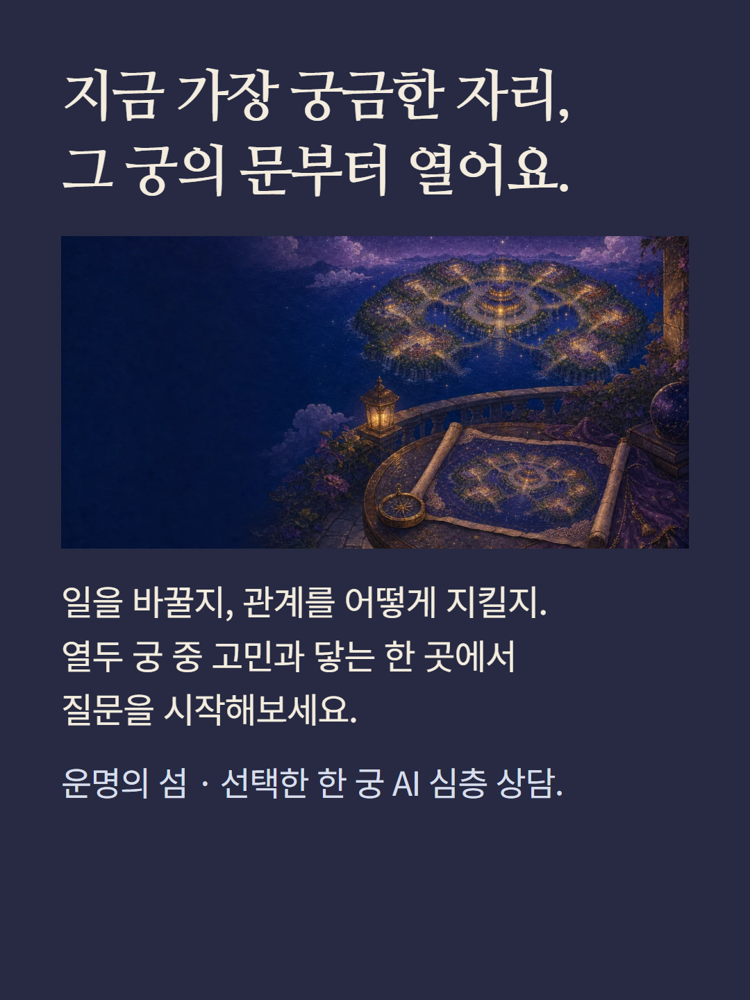
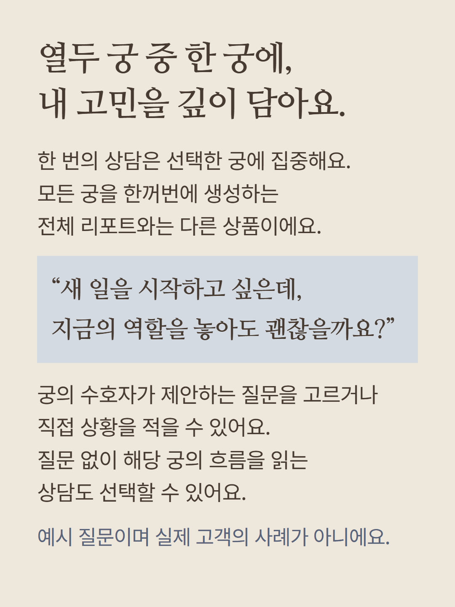
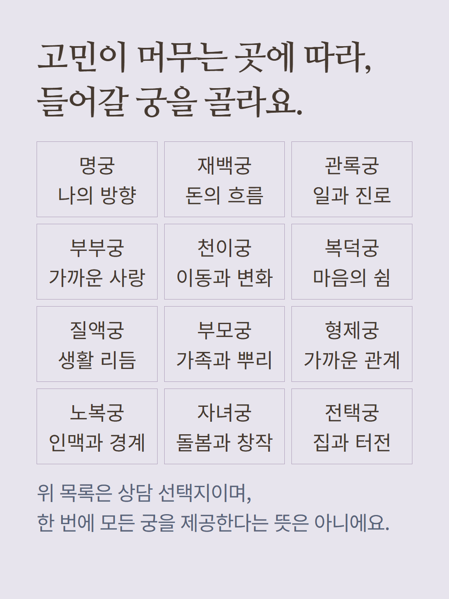
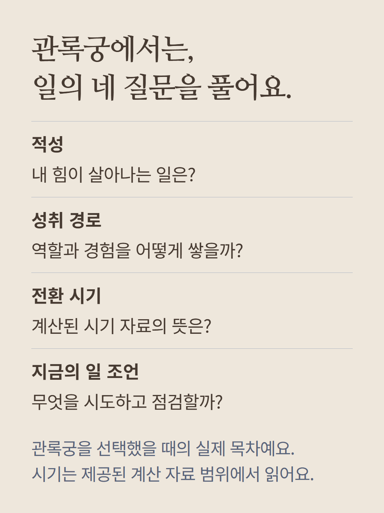
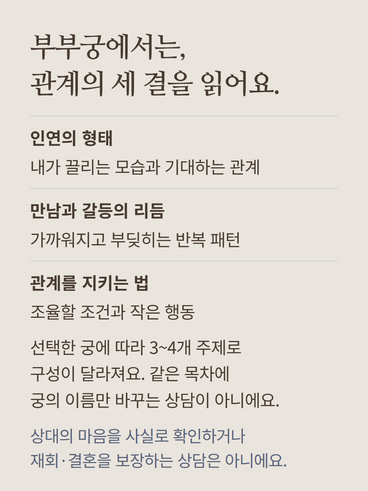
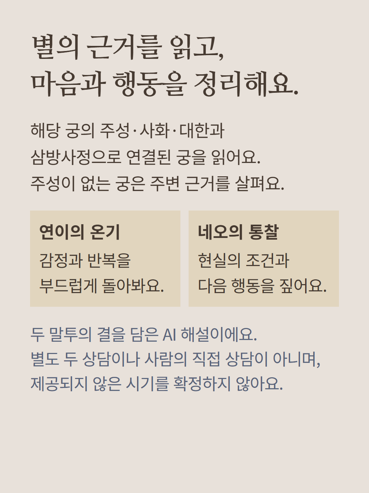
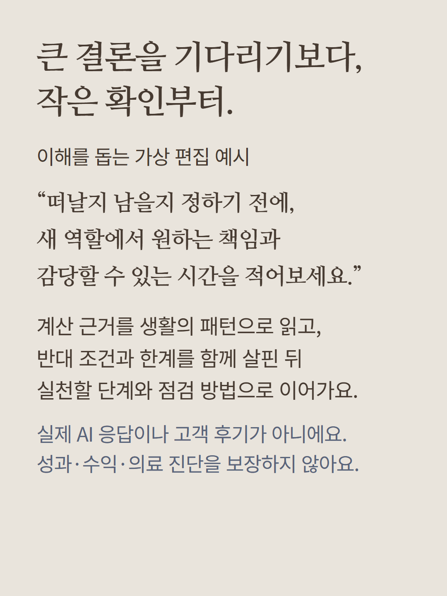
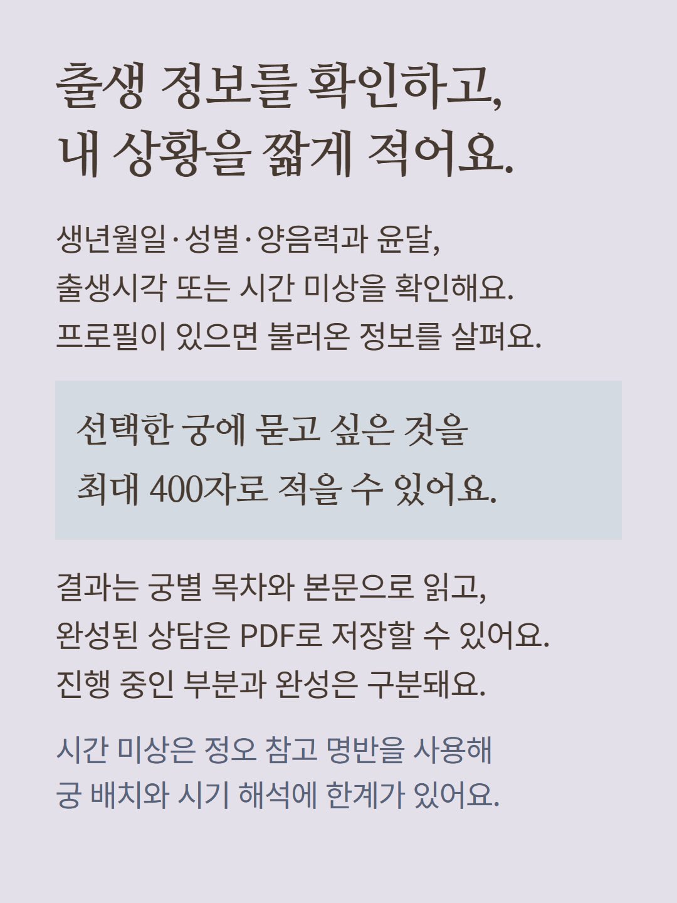
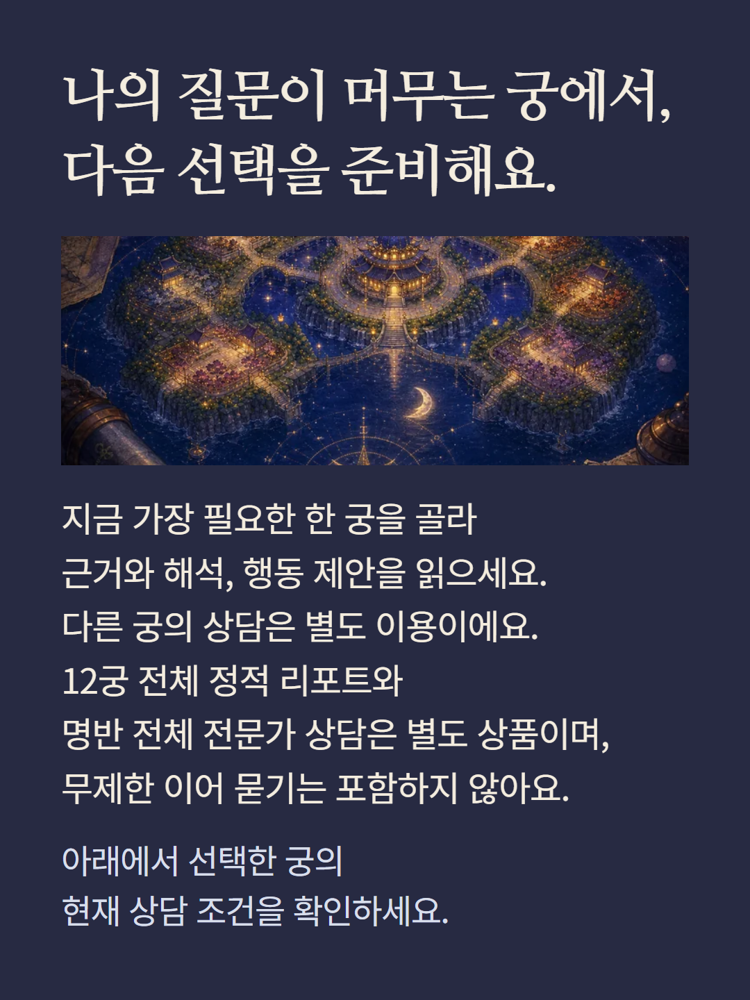

12궁 중 선택한 한 궁을 현재 고민에 맞춰 AI가 해설하는 상담입니다. 궁에 따라 실제3~4개의 다른 주제로 구성됩니다. 예를 들어 관록궁은 적성·성취경로·전환시기·지금의일조언,부부궁은 인연형태·만남갈등리듬·관계유지입니다. 해당궁 주성·사화·대한·삼방사정의 제공된 근거를 사용하고,계산근거·쉬운해설·생활패턴·반대조건과한계·실천단계를 읽습니다. 연이와 네오의 말투를 담은 한AI상담이며 사람의직접상담·별도두상담이 아닙니다. 생년월일·성별·양음력윤달·출생시각또는미상을 확인하고 선택질문최대400자를 입력합니다. 시간미상은정오참고명반의한계를읽습니다. 결과목차·본문·완성상담PDF저장을 지원하고 부분생성과완성을구분합니다. 다른궁과새상담,12궁전체정적리포트,명반전체전문가는별도이며 무제한후속질문을 포함하지 않습니다. 상대의마음·재회·성과·건강을확정하지 않습니다. 예시는가상편집으로실제AI응답후기가아니며이미지는분위기연출입니다. 현재이용조건을확인해 주세요.